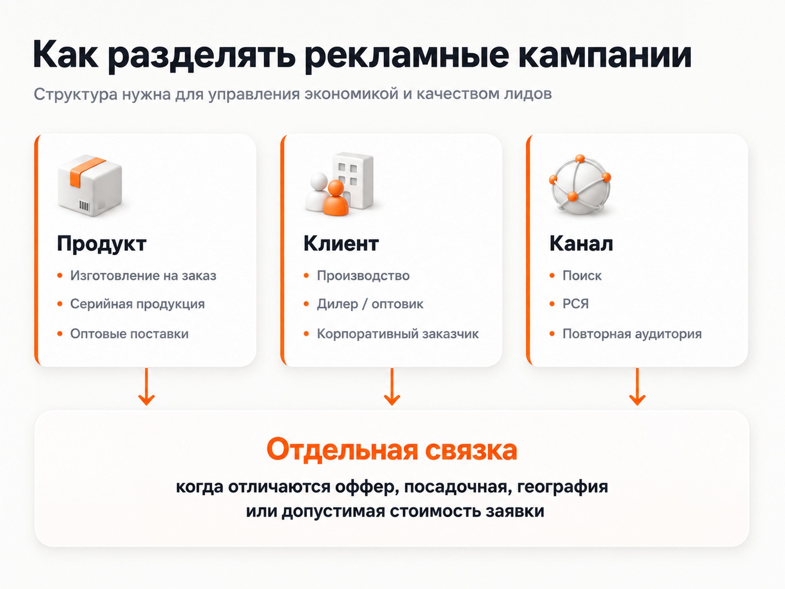
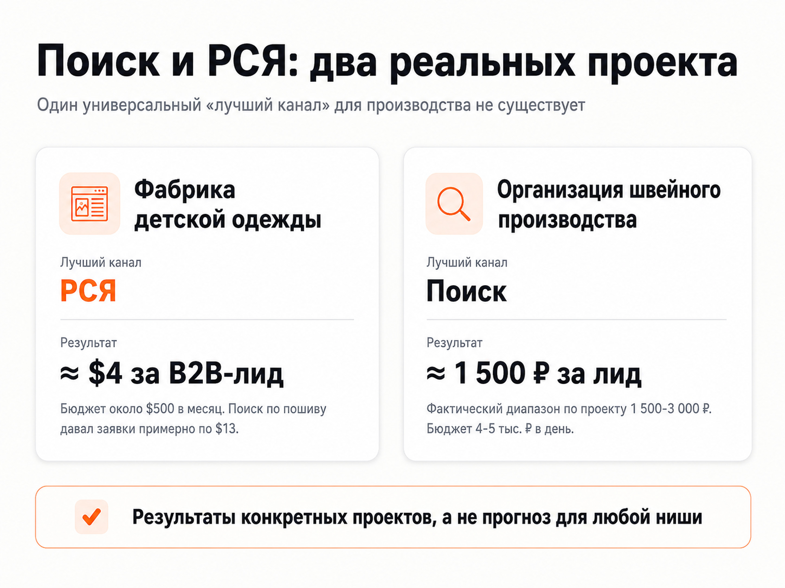

Блог о платном трафике
Настройка Яндекс Директ для производства
Настройка Яндекс Директ для производства начинается не с объявления и не со списка ключевых фраз. Сначала нужно разделить направления бизнеса, понять, кто именно должен оставить заявку, определить географию поставок и настроить аналитику. Только после этого имеет смысл выбирать Поиск, РСЯ, аудитории и стратегию.
Для производственного B2B это особенно заметно. Один и тот же завод может одновременно продавать готовую продукцию, принимать заказы на изготовление, искать дилеров и работать с крупным оптом. Если смешать эти задачи в одной рекламной связке, алгоритму сложнее понять, кого искать, а бизнесу - оценить качество заявок.
Я настраиваю рекламу производства как систему: направление → аудитория → объявление → отдельная посадочная страница → заявка → квалификация отделом продаж. Ниже разберу, как такую систему собрать и на что смотреть после запуска.

Чем реклама производства отличается от обычной настройки Директа
У производственных компаний часто есть несколько особенностей, которые напрямую влияют на рекламную структуру.
Во-первых, запрос может быть техническим. Потенциальный клиент ищет конкретный материал, тип продукции, технологию, размер партии, изготовление по чертежу или определенный формат поставки. Общая семантика вроде «заказать производство» редко описывает весь реальный спрос.
Во-вторых, часть обращений оказывается нецелевой по объему. Завод работает от определенной партии, а человек хочет одну единицу. Или компания продает только оптом, а реклама приводит розницу. Такие ограничения лучше показывать уже в объявлении и на посадочной странице, а не выяснять после звонка.
В-третьих, сделка часто не заканчивается отправкой формы. После заявки могут идти расчет, согласование ТЗ, образцы, коммерческое предложение и переговоры. Поэтому дешевый лид сам по себе еще не говорит, что реклама работает хорошо.
В-четвертых, возможности производства ограничены. Иногда задача рекламы заключается не в максимальном количестве обращений, а в управляемой загрузке конкретного направления.
Именно поэтому универсальная кампания «на все производство» обычно хуже структуры, где направления и типы спроса разделены по смыслу.
Что нужно определить до запуска рекламы
До входа в рекламный кабинет я собираю исходные данные по бизнесу. Минимально нужно ответить на несколько вопросов:
- что именно производим или изготавливаем на заказ;
- какие направления приоритетны по марже и загрузке;
- кто покупатель: конечный бизнес, дилер, оптовик, подрядчик, бренд;
- какие минимальные объемы заказа допустимы;
- в какие регионы можно поставлять продукцию;
- есть ли сезонность и ограничения по мощностям;
- какое обращение считается целевым;
- сколько такой заявки или продажи бизнес может позволить себе в рекламе.
Если уже есть действующие кампании, полезно отдельно проверить старые поисковые запросы, стоимость обращений, географию, качество заявок и страницы, на которые велась реклама.
Общий порядок подготовки я отдельно разбираю в материале «Настройка Яндекс Директ: что входит и как правильно запустить рекламу».
Как я строю структуру кампаний для производства
В 2026 году в Яндекс Директе значительная часть управления автоматизирована, поэтому я не стремлюсь создавать десятки кампаний только ради сложной структуры. Разделение должно помогать управлять экономикой и качеством трафика.
Обычно я разделяю рекламу, если отличаются:
- продукт или услуга;
- тип клиента;
- посадочная страница;
- регион;
- допустимая стоимость заявки;
- рекламное предложение;
- экономика направления.
Например, «изготовление деталей по чертежам» и «продажа серийной продукции со склада» - это два разных намерения. Им нужны разные объявления, страницы и критерии оценки.

Поиск
Поиск нужен для сформированного спроса. Пользователь уже вводит запрос, связанный с производством, поставкой или конкретной услугой. Для узких B2B-направлений это часто самый понятный способ начать тест, особенно если бюджет ограничен.
На Поиске я разделяю коммерческие намерения и контролирую реальные запросы после запуска. В Единой перфоманс-кампании автотаргетинг на Поиске является обязательной частью показа, поэтому задача специалиста не сводится к сбору большого списка ключей. Нужно правильно настроить категории, объявления, страницу и затем регулярно анализировать фактический трафик.
Пошаговую механику запуска я описал в статье «Как настроить рекламу в Яндекс Директ в 2026 году».
РСЯ
РСЯ позволяет работать с аудиторией вне прямого поискового запроса. Для производства этот канал может хорошо дополнять Поиск, но заранее считать его слабее или сильнее нельзя.
В одном моем производственном проекте именно РСЯ стала главным источником недорогих B2B-заявок, а в другом основной результат давал Поиск. Поэтому решение принимается по статистике конкретной ниши.
Отдельно о механике сетей: «Что такое РСЯ в Яндекс Директ и как она работает».
Повторная работа с уже знакомой аудиторией
Если цикл сделки длинный, часть потенциальных клиентов возвращается к выбору поставщика позже. Для таких сценариев полезны сегменты посетителей сайта и другие аудитории, по которым можно продолжить коммуникацию.
Здесь важно не пытаться догонять вообще всех посетителей. Лучше отделять тех, кто изучал конкретное направление, открывал каталог, смотрел условия или дошел до значимой части воронки.
Семантика: меньше механического сбора, больше разделения намерений
Для производства семантика нужна не ради количества ключевых слов. Ее задача - показать, какие типы спроса существуют и какие из них подходят бизнесу.
Я обычно выделяю:
- запросы по конкретному продукту;
- изготовление на заказ;
- оптовую закупку;
- запросы по технологии или материалу;
- запросы по применению продукции;
- региональные формулировки, если география влияет на сделку;
- брендовые и конкурентные направления, если их есть смысл тестировать.
После запуска обязательно смотрю реальные поисковые запросы. Именно там появляются формулировки, которые заранее невозможно собрать полностью.
Минус-фразы тоже нельзя настраивать один раз. В производственных нишах рядом с коммерческим спросом часто встречаются вакансии, обучение, самостоятельное изготовление, чертежи, розничные запросы и смежные продукты. Исключать их нужно аккуратно, чтобы не отрезать полезный спрос.
Подробнее об этом: «Минус-фразы для Яндекс Директа: как собрать список и правильно добавить».
Посадочная страница должна соответствовать конкретному направлению
Даже качественный трафик будет работать хуже, если вести его на общую главную страницу, где смешано несколько услуг и видов продукции.
Для рекламы производства на странице полезно сразу показать:
- что именно изготавливает компания;
- для кого работает;
- минимальный объем или условия заказа, если они есть;
- географию поставок;
- производственные возможности;
- примеры продукции и выполненных работ;
- фотографии производства;
- сертификаты и документы, если они важны для выбора;
- понятный способ запросить расчет, КП или консультацию.
Если направления сильно отличаются, я предпочитаю отдельные посадочные страницы. Это делает связку «запрос → объявление → страница» понятнее и для пользователя, и для рекламного алгоритма.
Такой подход хорошо показал себя в кейсе фабрики детской одежды: под пошив на заказ и под готовую продукцию были сделаны разные лендинги, потому что это два разных продукта и два разных типа спроса.
Аналитика для производственной компании
Минимальная аналитика - Яндекс Метрика и корректно настроенные цели на реальные обращения. Обычно это отправка формы, звонок, заявка на расчет или другое действие, которое связано с продажей.
Но для B2B-производства этого часто недостаточно. Две кампании могут давать одинаковую цену лида, при этом одна приводит компании с подходящими объемами, а другая - обращения, которые отдел продаж сразу отклоняет.
Поэтому я стараюсь оценивать рекламу минимум на двух уровнях:
- Стоимость первичного обращения.
- Качество обращения после квалификации.
Если бизнес использует CRM, полезно возвращать в аналитику статусы сделок и офлайн-конверсии. Яндекс Директ поддерживает передачу таких данных через Метрику и Центр конверсий. Это особенно полезно там, где между кликом и продажей проходит заметное время.
Для производственной рекламы ключевой вопрос звучит не «сколько заявок получили», а «сколько получили подходящих заявок и что с ними произошло дальше».
Два реальных примера: почему нельзя заранее выбрать один канал
У меня есть два проекта из близкой производственной тематики, которые хорошо показывают разницу между нишами.
| Проект | Что рекламировали | Что сработало лучше | Результат |
|---|---|---|---|
| Фабрика детской одежды | Пошив детской одежды на заказ и готовая продукция оптом | РСЯ | Около $4 за B2B-лид при рекламном бюджете около $500 в месяц |
| Организация швейного производства | Запуск производства одежды под ключ | Поиск | Поисковые заявки около 1500 ₽, фактический диапазон по проекту 1500-3000 ₽ |

В первом проекте фабрика находилась в Кыргызстане и не нуждалась в бесконтрольном потоке заявок. Рекламу нужно было подстроить под ограниченные мощности. Для пошива и продажи готовой продукции сделали разные страницы. Основной объем обращений пришел из РСЯ примерно по $4, Поиск по направлению пошива давал заявки примерно по $13, а готовая продукция со склада на Поиске была заметно дороже - около $40 за обращение.
Во втором проекте компания помогала организовать швейное производство в Москве и Московской области. Клиент считал приемлемой заявку до 5000 ₽, но Поиск оказался существенно эффективнее: около 1500 ₽ за лид. Общий фактический диапазон держался примерно на уровне 1500-3000 ₽. При бюджете 4-5 тысяч рублей в день основной упор сделали именно на горячий поисковый спрос, а не на одновременный запуск максимального количества форматов.
Эти кейсы дают практический вывод: для производства нельзя использовать правило «Поиск всегда лучше РСЯ» или наоборот. Канал выбирается по спросу, продукту, бюджету, посадочной странице и реальному качеству обращений.
Как проходит настройка Яндекс Директ для производственной компании
Мой рабочий процесс обычно выглядит так.
1. Разбираю продукт и экономику
Определяю приоритетные направления, тип клиентов, ограничения по заказу, географию и допустимую стоимость обращения.
2. Проверяю сайт и аналитику
Смотрю, есть ли отдельные страницы под рекламируемые продукты, понятен ли оффер, работают ли формы и можно ли корректно измерять заявки.
3. Формирую структуру спроса
Разделяю продуктовые, коммерческие и технические намерения. Собираю полезные ключевые фразы и заранее исключаю очевидно нецелевые направления.
4. Собираю кампании и объявления
Настраиваю места показа, географию, аудитории, автотаргетинг, объявления и ограничения. Там, где это оправдано, запускаю отдельные связки под Поиск и РСЯ.
5. Запускаю тест и контролирую первые данные
Проверяю фактические поисковые запросы, площадки, расходы, конверсии и качество обращений. Очевидный мусор убирается сразу, крупные решения принимаются после накопления данных.
6. Оптимизирую по качеству лидов
Слабые связки отключаются или перерабатываются. Рабочие направления получают больше бюджета. Если проблема находится на странице или в оффере, дорабатывается не только рекламный кабинет.
Как определить бюджет
Универсального бюджета для рекламы производства нет. Он зависит от спроса, региона, конкуренции, числа направлений, стоимости трафика и допустимой цены обращения.
Для автоматических конверсионных стратегий особенно важен объем данных. Яндекс рекомендует недельный бюджет, достаточный как минимум примерно для 10 конверсий по выбранной цели. Если производственная ниша узкая и столько заявок физически не набирается, стратегию и структуру запуска нужно выбирать с учетом этого ограничения, а не копировать настройки из массового B2C.
Поэтому бюджет я считаю от задачи бизнеса: сколько целевых обращений нужно получить, сколько можно платить за квалифицированный лид и какой объем спроса вообще доступен.
Стоимость работы специалиста и рекламный бюджет - отдельные статьи расходов. Это подробнее разобрано в материале «Стоимость услуг директолога».
Ошибки, которые чаще всего мешают рекламе производства
Самые проблемные сценарии обычно не связаны с одной «секретной» настройкой.
- Все товары и услуги ведут на одну общую страницу.
- Розничный и оптовый спрос смешаны.
- Не указаны ограничения по минимальному заказу.
- Кампания оценивается только по кликам и CTR.
- В Метрике оптимизация идет по слишком простой цели вместо реальной заявки.
- Поисковые запросы после запуска почти не проверяются.
- Качество лидов не возвращается от отдела продаж в маркетинг.
- Бюджет распыляется между слишком большим количеством направлений.
- Поиск и РСЯ заранее оцениваются по общему правилу вместо статистики конкретного проекта.
Хорошая настройка отличается тем, что по каждому направлению можно объяснить, кого мы привлекаем, куда ведем, какое действие считаем конверсией и по каким данным решаем, что реклама эффективна.
Заказать настройку Яндекс Директ для производства
Я занимаюсь настройкой и ведением Яндекс Директа более 10 лет и работаю с проектами напрямую. В производственных нишах начинаю с разбора продукта, ограничений бизнеса, посадочных страниц и аналитики, затем собираю рекламную структуру и после запуска оптимизирую ее по фактическим обращениям.
Посмотреть другие проекты можно в разделе кейсов, а два производственных примера - в кейсах фабрики детской одежды и организации швейного производства.
Частые вопросы
Что лучше для производства - Поиск или РСЯ?
Заранее определить нельзя. Поиск чаще работает со сформированным спросом, РСЯ позволяет находить аудиторию шире. В моих двух близких производственных проектах победили разные каналы, поэтому решение нужно принимать по реальной статистике.
Нужно ли делать отдельную кампанию на каждый товар?
Нет. Разделять имеет смысл те направления, у которых отличаются спрос, экономика, посадочная страница, география или допустимая цена заявки. Чрезмерное дробление может только усложнить управление и распределить статистику между большим количеством элементов.
Можно ли запустить рекламу производства без CRM?
Можно, если все основные обращения корректно фиксируются в Метрике и бизнес дает обратную связь по качеству лидов. Но при длинной сделке CRM сильно упрощает оценку того, какие источники приводят квалифицированные обращения и продажи.
Нужно ли собирать тысячи ключевых фраз?
Нет. В современном Директе ключевые фразы работают вместе с автотаргетингом. Полезнее хорошо разделить основные намерения, подготовить релевантные страницы и после запуска постоянно анализировать реальные поисковые запросы.